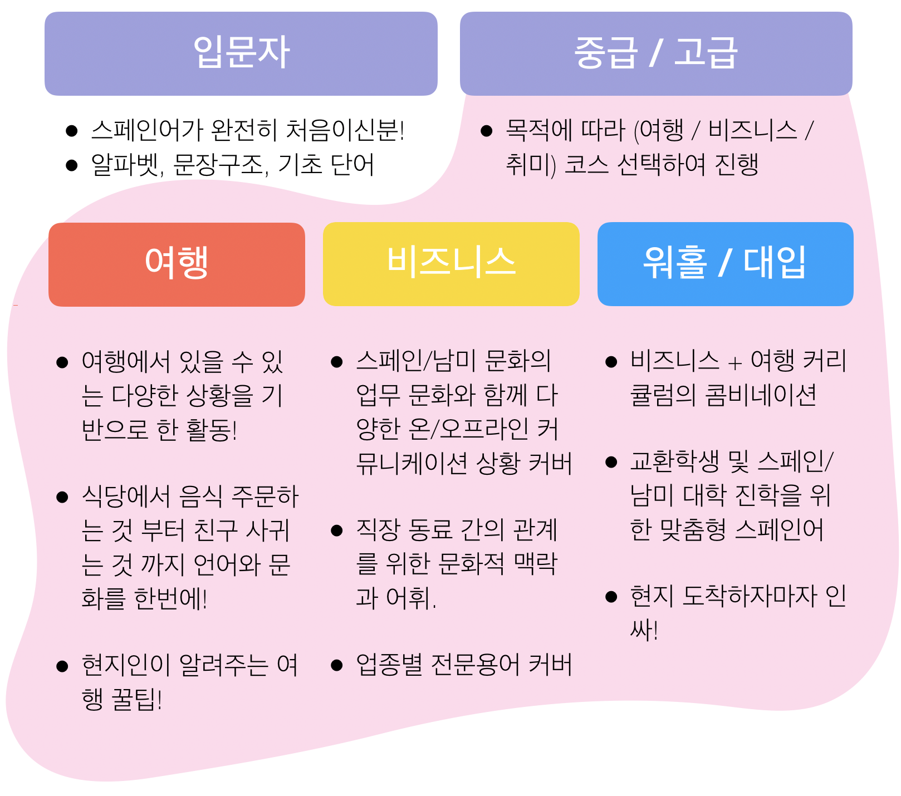
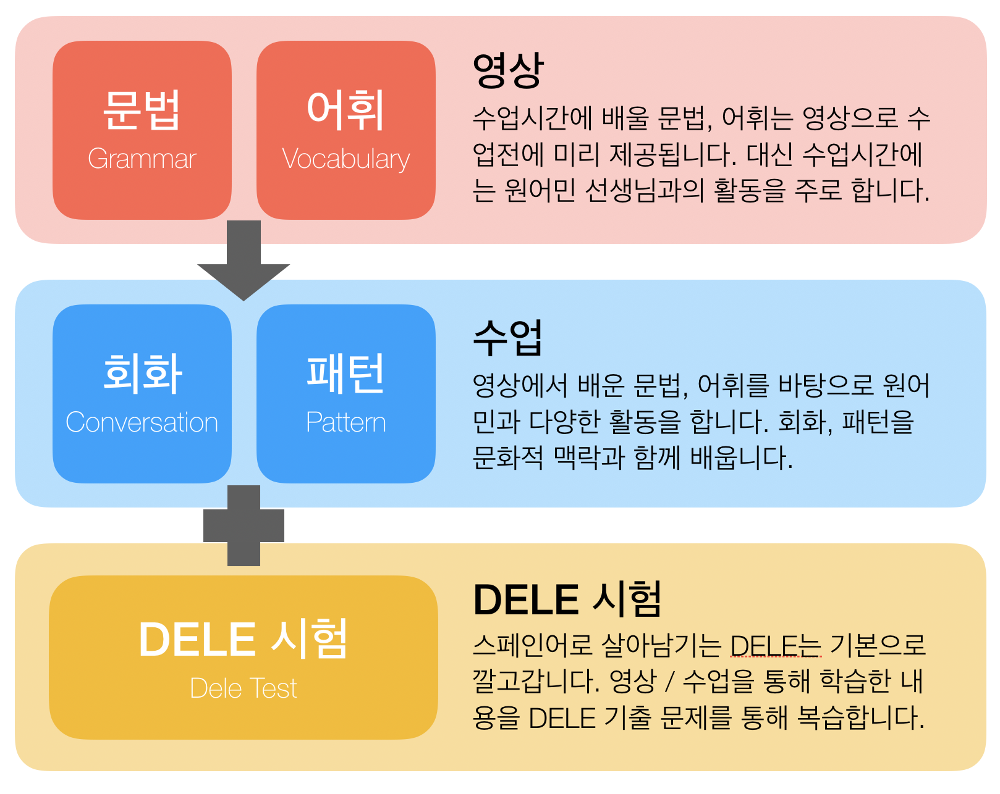
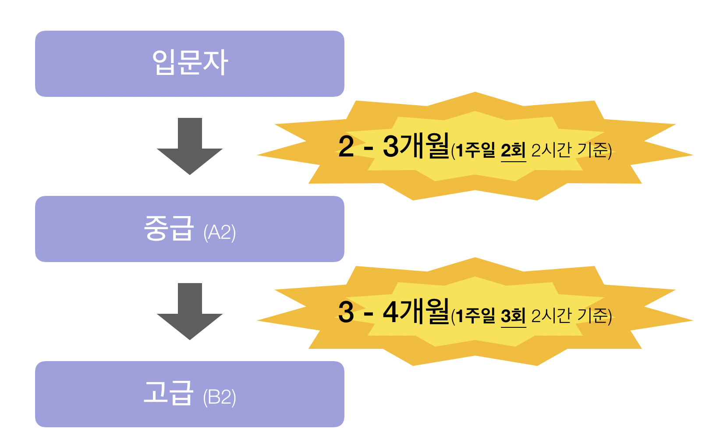

원어민 선생님과 함께
문화, 문법, 라이프스타일, 회화, 델레를 한번에
커리큘럼
스페인어로 살아남기는 지금까지 학교에서 언어를 과목으로써 배웠기에, 언어를 언어로써 배울 수 있는 기회를 갖고자 시작했습니다. 언어는 단순히 의사소통 수단이 아니라, 사람들의 사고방식, 생활 양식, 그리고 그 문화를 담고 있다고 믿습니다.
그래서 저희는 원어민 선생님과 무조건 함께합니다. 언어와 문화를 배우는데 가장 빠른 방법은 직접 체험하는 것입니다. 마치 아기가 떠듬떠듬 모국어를 배우 듯, 원어민과 함께 대화하다 보면 어느새 능숙하게 스페인어로 대화하는 자신을 발견할 수 있을 것입니다.
수업방식
스페인어로 살아남기는 영상을 활용하여 수업시간에 개념을 가르치는 시간을 최소화하고, 대화하고 연습할 수 있는 시간을 최대화 합니다.
수업시간에는 영상을 통해 학습한 문법 개념과 어휘를 원어민과 다양한 상황별 학습을 통해 실습합니다. 이때 대화를 통해 스페인/라틴 문화, 라이프스타일을 자연스럽게 학습할 수 있습니다.
영어 혹은 스페인어로 소통이 가능하신 분은 원어민 선생님과, 소통이 불가능하신 분은 한국인 선생님&원어민과 함께 수업을 진행합니다.
스페인어로 살아남기는 DELE 취득을 목표로 하지 않습니다. DELE는 기본으로 깔고갑니다. DELE 시험을 원하는 분을 대상으로 수업시간별로 배우는 문법, 회화 내용을 기반으로 한 DELE 시험 기출 문제를 제공합니다. (A1 ~ C1)
수업 규모
- 모든 수업 프로그램은 주당 2회, 회당 1시간 30분 ~ 2시간을 기본으로 합니다.
- 결제는 한달 단위로 가능합니다.
- 첫번째 수업은 레벨 체크, 원하는 수업 방향 등을 확인하고 무료로 제공됩니다.
- 온라인의 경우 모든 수업내용은 동일하나 화상 통화로 진행됩니다.
- 코로나 바이러스로 인해 5인 이상 수업은 잠정 연기합니다.
수업 기간
상담문의
전화 / 문자 문의
010-6622-9412
카카오톡 문의
sblee610
이메일 문의
eric@funcompany.org
상담 가능 시간
0900 - 2100